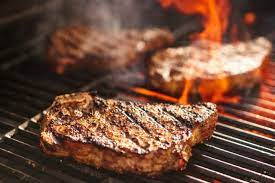

Grilled Steak Recipe

This Recipe is for a delicious grill cooked steak
Ingredients
- 2, 1lb bone-in strip steaks cut 1-1/2" thick (or your steak of choice)
- Vegetable Oil
For the Steak Seasoning
- 3/4 Tablespoon rock salt
- 1-1/2 teaspoons whole black peppercorns
- 1/2 teaspoon dried minced garlic
- 1/2 teaspoon dried minced onion
- 1/4 teaspoon fennel seeds
- 1/8 teaspoon red chili pepper flakes
Directions
Step 1: Make the Steak Seasoning
- Start by making the homemade steak seasoning. Trust me – this homemade version is light years better than anything you have pre-mixed in your cupboard. Add rock salt, whole black peppercorns, minced dried garlic, minced dried onion, fennel seeds, and red chili pepper flakes to a mortar then grind it up with the pestle.
Step 2: Make the Herb Butter
- Next make the Herb Butter. To a bowl add salted butter that’s been softened to room temperature, finely minced rosemary and thyme, chopped parsley, minced garlic, plus a big pinch of the homemade steak seasoning. That last addition is what totally makes the butter.
- Mix to combine then scoop the butter onto a sheet of plastic wrap and shape it into a log. Refrigerate until solid – overnight is great – or freeze for 20-30 minutes if time is of the essence.
Step 3: Prep the steaks
- These photos show 1lb Bone-In Strip Steaks cut 1-1/2″ thick but you can use whatever steak cut you like best. Ribeyes are a treat! Pat the steaks very dry with a paper towel then drizzle both sides with a small amount of vegetable oil and rub with a generous pinch of steak seasoning. Don’t be afraid to add a lot – this is a TON of meat!
Step 4: Grill the steaks
As I said, the best way to get sizzling steaks on the outside and juicy, buttery steak on the inside is to first sear the steaks over a hot, high flame, then move the steaks over to a cooler, unlit portion of the grill to finish cooking via indirect heat. Here’s how you do that:
- Step 1: Turn 1/2 to 2/3 of the burners on your grill to high (if you have 2 burners, light 1 – if you have 3 burners, light 2) then let the grill preheat for at least 10 minutes, or until it reaches 500 degrees. If you have a charcoal grill, heat your coals then move them to one side of the grill when they’re screaming hot.
- Step 2: Add the steaks to the lit portion of the grill then sear for 1-1/2 minutes on each side (if your steaks are thicker or thinner than 1-1/2″, adjust accordingly.) Move the steaks over to the unlit portion of the grill then continue cooking until they’ve reached your preferred level of doneness. My 1-1/2″ thick steaks took ~7 minutes to reach medium.
- Let the steaks rest on a platter for at least five minutes, then top them with big fat slices of herb butter.
- Juicy grilled steak perfection!! That salty-seasoned crust and compound herb butter are mind meltingly-delicious. Your quest for perfect grilled steak ends right here. Enjoy, enjoy!